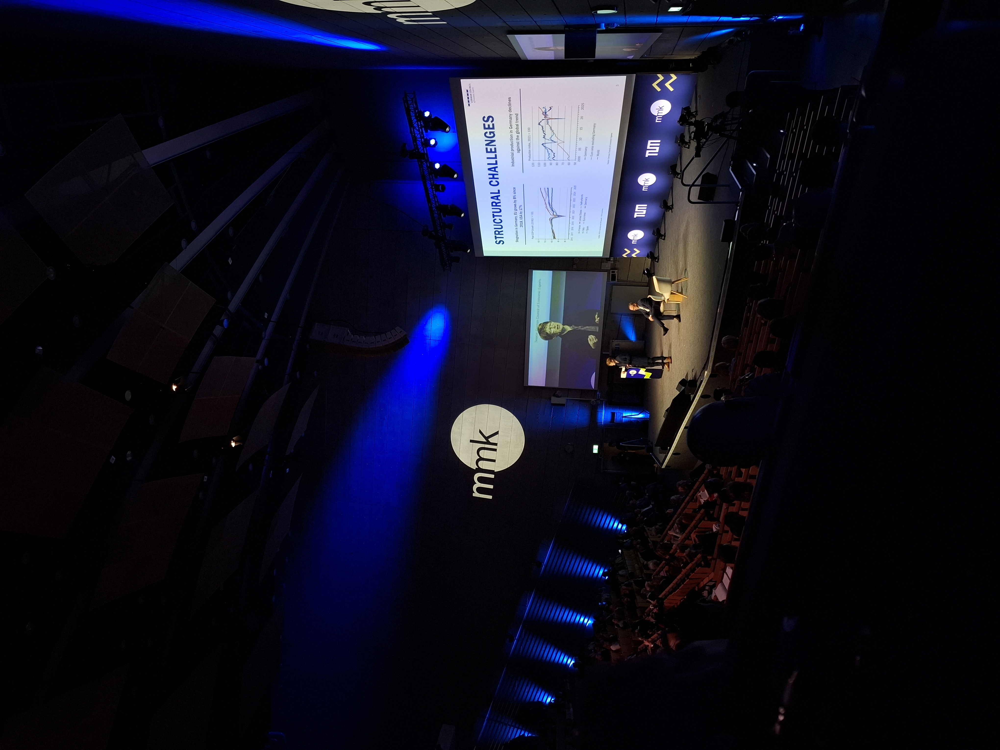

Event
mmk
As part of the Dean’s List, I had the chance to attend the Munich Management Colloquium (MMK) with a complimentary ticket. The event brought together leaders from industry and academia to discuss current challenges and future opportunities in areas such as innovation, digital transformation, and leadership. I am very thankful for this opportunity!